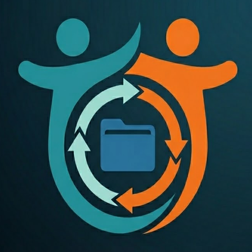

Peer-to-peer encrypted folder sync with relay-backed restore. Keep your documents, photos, and other important folders encrypted on a trusted buddy machine, then rebuild a lost machine with a 12-word recovery phrase and resync missing files.

Offsite backup with someone you trust, plus a recovery path when a new machine has to take over.
Fire, flood, theft, and dead disks are easier to survive when a buddy holds the other copy. Your backup lives somewhere you do not live.
Set up a 12-word recovery phrase once. BuddyDrive derives a master key from it and syncs an encrypted copy of your config to the relay, so a replacement machine can rebuild itself.
Filenames and file contents are encrypted with XSalsa20-Poly1305 before they are stored with your buddy. Blob names are hashes of the encrypted paths, so even the directory listing says nothing.
Only the machine that owns a folder moves or deletes its files. A buddy stores sealed chunks it never opens, serves them back on request, and cannot push files into your folders.
After recover, a takeover session pulls back files your machine has no record of. Moves are detected by content hash, so a rename does not re-upload.
No accounts, no subscription, no black box between you and your data. Audit the code, or change it.
on both machines
using a simple code
to sync and optionally enable recovery
- recover config with 12 words, then let sync recreate missing files
| Cloud Backup | BuddyDrive |
|---|---|
| $5-20/month forever | Free, forever |
| Data stored on company servers | Data stored with your buddy |
| Trust the provider | Trust someone you know |
| Account required | No account required |
| Recover through vendor | Recover with your own 12 words |
Families, friends, and small teams that want offsite encrypted backup, a practical restore path, and fewer subscriptions.
BuddyDrive builds from source on Linux and macOS. Install it on two machines, pair them with one shared code, set up recovery, and start backing up.
Download Now or read the full feature list.